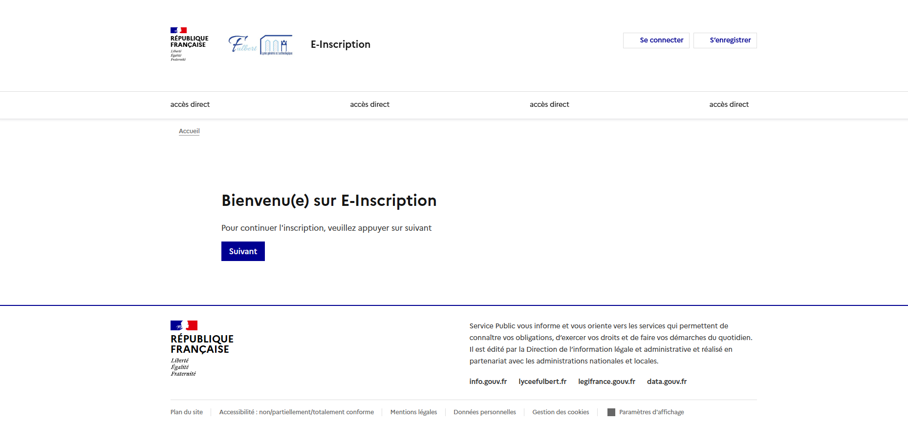
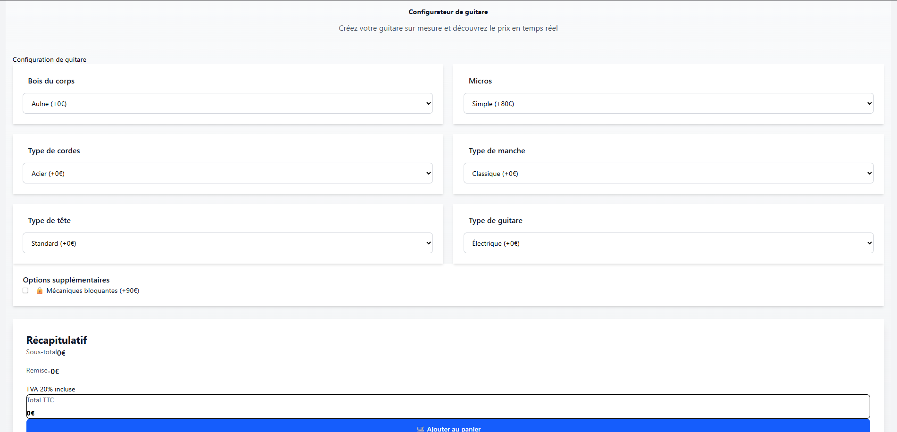
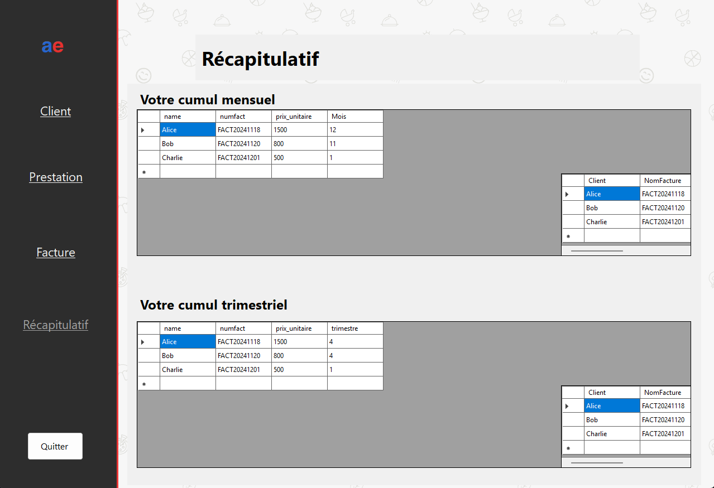

Quelques projets réalisés lors de ma formation et de mes stages, du web au logiciel desktop.

Application web permettant aux futurs étudiants de s'inscrire dans leurs formations, directement depuis Parcoursup. Conçue pour réduire l'utilisation du papier et faciliter le travail des secrétariats.

Application front-end permettant de configurer une guitare pièce par pièce (corps, manche, micros…) avec visualisation en temps réel et comparaison de deux configurations via une API externe.

Logiciel de facturation open-source pour entrepreneurs, permettant de gérer clients, produits et factures avec suivi de l'état en temps réel.
Système de gestion de flotte de véhicules pour entreprises — suivi de l'entretien, planification des réparations et gestion complète du parc.